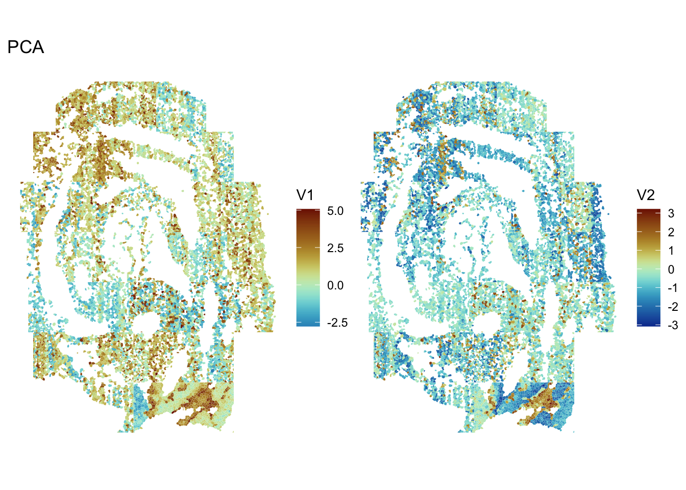
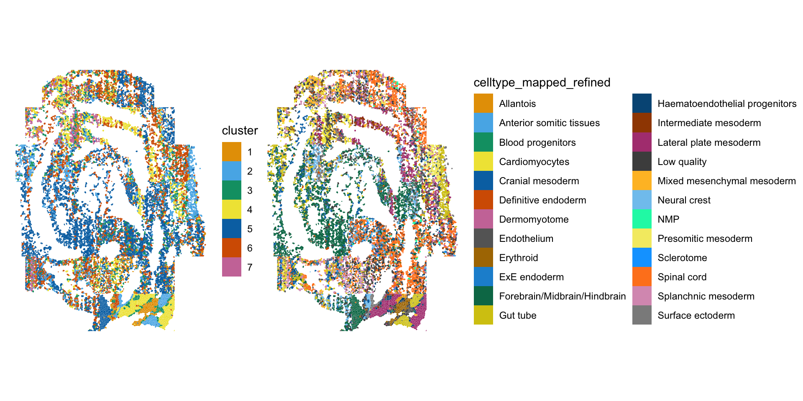

library(Voyager)
library(SFEData)
library(SingleCellExperiment)
library(SpatialExperiment)
library(SpatialFeatureExperiment)
library(batchelor)
library(scater)
library(scran)
library(bluster)
library(purrr)
library(tidyr)
library(dplyr)
library(fossil)
library(ggplot2)
library(patchwork)
library(spdep)
library(BiocParallel)
theme_set(theme_bw())seqFISH exploratory data analysis
Introduction
In this vignette, we will demonstrate an example analysis workflow for spatial transcriptomics data collected using the seqFISH technology. The analysis will cover quality control, normalization, dimension reduction, clustering, and univariate spatial statistics. The workflow will make use of functions implemented in the Voyager R package as well as other Bioconductor packages.
Dataset
The data used in this vignette are described in Integration of spatial and single-cell transcriptomic data elucidates mouse organogenesis. Briefly, seqFISH was use to profile 351 genes in several mouse embryos at the 8-12 somite stage (ss). We will focus on a single biological replicate, embryo 3. The raw and processed counts and corresponding metadata are available to download from the Marioni lab. Expression matrices, segmentation data, and segmented cell vertices are provided as R objects that can be readily imported into an R environment. The data relevant to this vignette have been converted to a SFE object and are available to download here from Box.
The data have been added to the SFEData package on Bioconductor and will be available in the release release.
We will begin by downloading the data and loading it in to R.
# Only Bioc release and above
sfe <- LohoffGastrulationData()
#> see ?SFEData and browseVignettes('SFEData') for documentation
#> loading from cacheThe rows in the count matrix correspond to the 351 barcoded genes measured by seqFISH. Additionally, the authors provide some metadata, including the field of view and z-slice for each cell. We will filter the count matrix and metadata to include only cells from a single z-slice.
names(colData(sfe))
#> [1] "uniqueID" "embryo"
#> [3] "pos" "z"
#> [5] "x_global" "y_global"
#> [7] "x_global_affine" "y_global_affine"
#> [9] "embryo_pos" "embryo_pos_z"
#> [11] "Area" "UMAP1"
#> [13] "UMAP2" "celltype_mapped_refined"
#> [15] "sample_id"mask <- colData(sfe)$z == 2
sfe <- sfe[,mask]Quality control
We will begin quality control (QC) of the cells by computing metrics that are common in single-cell analysis and store them in the colData field of the SFE object. Below, we compute the number of counts per cell. We will also compute the average and display it on the violin plot.
colData(sfe)$nCounts <- colSums(counts(sfe))
avg <- mean(colData(sfe)$nCounts)
violin <- plotColData(sfe, "nCounts") +
geom_hline(yintercept = avg, color='red') +
theme(legend.position = "top")
spatial <- plotSpatialFeature(sfe, "nCounts", colGeometryName = "seg_coords")
violin + spatial
Notably, the cells in this dataset have fewer counts than would be expected in a single-cell sequencing experiment and the cells with higher counts seem to be dispersed throughout the tissue. Fewer counts are expected in seqFISH experiments where probing for highly expressed genes may lead to optical crowding over multiple imaging rounds.
Since the counts are collected from several fields of view, we will visualize the number of cells and total counts for each field separately.
pos <- colData(sfe)$pos
counts_spl <- split.data.frame(t(counts(sfe)), pos)
# nCounts per FOV
df <- map_dfr(counts_spl, rowSums, .id='pos') |>
pivot_longer(cols=contains('embryo'), values_to = 'nCounts') |>
mutate(pos = factor(pos, levels = paste0("Pos", seq_len(length(unique(pos)))-1))) |>
dplyr::filter(!is.na(nCounts))
cells_fov <- colData(sfe) |>
as.data.frame() |>
mutate(pos = factor(pos, levels = paste0("Pos", seq_len(length(unique(pos)))-1))) |>
ggplot(aes(pos,)) +
geom_bar() +
theme_minimal() +
labs(
x = "",
y = "Number of cells") +
theme(axis.text.x = element_text(angle = 90))
counts_fov <- ggplot(df, aes(pos, nCounts)) +
geom_boxplot(outlier.size = 0.5) +
theme_minimal() +
labs(x = "", y = 'nCounts') +
theme(axis.text.x = element_text(angle = 90))
cells_fov / counts_fov
There is some variability in the total number of counts in each field of view. It is not completely apparent what accounts for the low number of counts in some FOVs. For example, FOV 22 has the fewest number of cells, but comparably more counts are detected there than in regions with more cells (e.g. FOV 18).
Next, will will compute the number of genes detected per cell, defined here as the number of genes with non-zero counts. We will again plot this metric for each FOV as is done above.
colData(sfe)$nGenes <- colSums(counts(sfe) > 0)
avg <- mean(colData(sfe)$nGenes)
violin <- plotColData(sfe, "nGenes") +
geom_hline(yintercept = avg, color='red') +
theme(legend.position = "top")
spatial <- plotSpatialFeature(sfe, "nGenes", colGeometryName = "seg_coords")
violin + spatial
Many cells have fewer than 100 detected genes. This in part reflects that the panel of 351 probed genes was chosen to distinguish cell types at these developmental stages and that distinct cell types will likely express a small subset of the 351 genes. The authors also note that the gene panel consists of lowly expressed to moderately expressed genes. Taken together, these technical details can explain the relatively low number of counts and genes per cell.
Here, we plot the number of genes detected per cell in each FOV.
df <- map_dfr(counts_spl, ~ rowSums(.x > 0), .id='pos') |>
pivot_longer(cols = contains('embryo'), values_to = 'nGenes') |>
mutate(pos = factor(pos, levels = paste0("Pos", seq_len(length(unique(pos)))-1))) |>
filter(!is.na(nGenes)) |>
merge(df)
genes_fov <- ggplot(df, aes(pos, nGenes)) +
geom_boxplot(outlier.size = 0.5) +
theme_bw() +
labs(x = "") +
theme(axis.text.x = element_text(angle = 90))
genes_fov
This plot mirrors the plot above for total counts. No single FOV stands out as an obvious outlier.
The authors have provided cell type assignments as metadata. We can assess whether the low quality cells tend to be located in a particular FOV.
meta <- data.frame(colData(sfe))
meta <- meta |>
group_by(pos) |>
add_tally(name = "nCells_FOV") |>
filter(celltype_mapped_refined %in% "Low quality") |>
add_tally(name = "nLQ_FOV") |>
mutate(prop_lq = nLQ_FOV/nCells_FOV) |>
distinct(pos, prop_lq) |>
ungroup() |>
mutate(pos = factor(pos, levels = paste0("Pos", seq_len(length(unique(pos)))-1)))
prop_lq <- ggplot(meta, aes(pos, prop_lq)) +
geom_bar(stat = 'identity' ) +
theme(axis.text.x = element_text(angle = 90))
prop_lq
It appears that FOV 26 and 31 have the largest fraction of low quality cells. Interestingly, these do not correspond to the FOVs with the largest number of cells overall.
Here we plot nCounts vs. nGenes for each FOV.
count_vs_genes_p <- ggplot(df, aes(nCounts, nGenes)) +
geom_point(
alpha = 0.5,
size = 1,
fill = "white"
) +
facet_wrap(~ pos)
count_vs_genes_p 
As in scRNA-seq, gene expression variance in seqFISH measurements is overdispersed compared to variance of counts that are Poisson distributed.
gene_meta <- map_dfr(counts_spl, colMeans, .id = 'pos') |>
pivot_longer(cols = -pos, names_to = 'gene', values_to = 'mean')
gene_meta <- map_dfr(counts_spl, ~colVars(.x, useNames = TRUE), .id = 'pos') |>
pivot_longer(-pos, names_to = 'gene', values_to='variance') |>
full_join(gene_meta)
#> Joining with `by = join_by(pos, gene)`To understand the mean-variance relationship, we compute the mean and variance for each gene among cells in tissue. As above, we will perform this calculation separately for each FOV
ggplot(gene_meta, aes(mean, variance)) +
geom_point(
alpha = 0.5,
size = 1,
fill = "white"
) +
facet_wrap(~ pos) +
geom_abline(slope = 1, intercept = 0, color = "red") +
scale_x_log10() + scale_y_log10() +
annotation_logticks()
The red line represents the line \(y = x\), which is the mean-variance relationship that would be expected for Poisson distributed data. The data deviate from this expectation in each FOV. In each case, the variance is greater than what would be expected.
Data normalization and dimension reduction
The exploratory analysis above indicates the presence of batch effects corresponding to FOV. We will use a normalization scheme that is batch aware. As the SFE object inherits from the SpatialExperimentand SingleCellExperiment, classes, we can take advantage of normalization methods implemented in the scran and batchelor R packages.
We will first use the multiBatchNorm() function to scale the data within each batch. As noted in the documentation, the function uses median-based normalization on the ratio of the average counts between batches.
Batch correction and dimension reduction is accomplished using fastMNN() which performs multi-sample PCA across multiple gene expression matrices to project all cells to a common low-dimensional space.
sfe <- multiBatchNorm(sfe, batch = pos)
sfe_red <- fastMNN(sfe, batch = pos, cos.norm = FALSE, d = 20)The function fastMNN returns a batch-corrected matrix in the reducedDims slot of a SingleCellExperiment object. We will extract the relevant data and store them in the SFE ojbject.
reducedDim(sfe, "PCA") <- reducedDim(sfe_red, "corrected")
assay(sfe, "reconstructed") <- assay(sfe_red, "reconstructed") Now we will visualize the first two PCs in space. Here we notice that the PCs may show some spatial structure that correlates to biological niches of cells.
spatialReducedDim(sfe, "PCA", ncomponents = 2, divergent = TRUE, diverge_center = 0)
Unfortunately, FOV artifacts can still be seen.
Clustering
Much like in single cell analysis, we can use the batch-corrected data to cluster the cells. We will implement a graph-based clustering algorithm and plot the resulting clusters in space.
colData(sfe)$cluster <-
clusterRows(reducedDim(sfe, "PCA"),
BLUSPARAM = SNNGraphParam(
cluster.fun = "leiden",
cluster.args = list(
resolution_parameter = 0.5,
objective_function = "modularity")
)
)The plot below is colored by cluster ID and by the cell types provided by the author.
plotSpatialFeature(sfe, c("cluster", "celltype_mapped_refined"),
colGeometryName = "seg_coords")
The authors have assigned cells to more types than are identified in the clustering step. In any case, the clustering results seem to recapitulate the major cell niches from the previous annotations. We can compute the Rand index using a function from the fossil package to assess the similarity between the two clustering results. A value of 1 would suggest the clustering results are identical, while a value of 0 would suggest that the results do not agree at all.
g1 <- as.numeric(colData(sfe)$cluster)
g2 <- as.numeric(colData(sfe)$celltype_mapped_refined)
rand.index(g1, g2)
#> [1] 0.8426913The relatively large Rand index suggests that cells are often found in the same cluster in both cases.
Univariate Spatial Statistics
At this point, we may be interested in identifying genes that exhibit spatial variability, or whose expression depends on spatial location within the tissue. Measures of spatial autocorrelation can be useful in identifyign genes that display spatial variablity. Among the most common measures are Moran’s I and Geary’s C. In the latter case, a less than 1 indicates positive spatial autocorrelation, while a value larger than 1 points to negative spatial autocorrelation. In the former case, positive and negative values of Moran’s I indicate positive and negative spatial autocorrelation, respectively.
These tests require a spatial neighborhood graph for computation of the statistic. There are several ways to define spatial neighbors and the findSpatialNeighbors() function wraps all of the methods implemented in the spdep package. Below, we compute a k-nearest neighborhood graph. The dist_type = "idw" weights the edges of the graph by the inverse distance between neighbors.
colGraph(sfe, "knn5") <- findSpatialNeighbors(
sfe, method = "knearneigh", dist_type = "idw",
k = 5, style = "W")We will also save the most variable genes for use in the computations below.
dec <- modelGeneVar(sfe)
hvgs <- getTopHVGs(dec, n = 100)We use the runUnivariate() function to compute the spatial autocorrelation metrics and save the results and save them in the SFE object. The mc type for each test implements a permutation test for each statistic and relies on the nsim argument for computing a p-value for the statistic.
sfe <- runUnivariate(
sfe, type = "geary.mc", features = hvgs,
colGraphName = "knn5", nsim = 100, BPPARAM = MulticoreParam(2))sfe <- runUnivariate(
sfe, type = "moran.mc", features = hvgs,
colGraphName = "knn5", nsim = 100, BPPARAM = MulticoreParam(2))
sfe <- colDataUnivariate(
sfe, type = "moran.mc", features = c("nCounts", "nGenes"),
colGraphName = "knn5", nsim = 100)We can plot the results of the Monte Carlo simulations:
plotMoranMC(sfe, "Meox1")
The vertical line represents the observed value of Moran’s I and the density represents Moran’s I computed from the permuted data. These simulations suggest that the spatial autocorrelation for this feature is significant.
The function can also be used to plot the geary.mc results.
Now, we might ask: which genes display the most spatial autocorrelation?
top_moran <- rownames(sfe)[order(-rowData(sfe)$moran.mc_statistic_sample01)[1:4]]
plotSpatialFeature(sfe, top_moran, colGeometryName = "seg_coords")
It appears that the genes with the highest spatial autocorrelation seem to have obvious expression patterns in the tissue.
It would be interesting to see if these genes are also differentially expressed in the clusters above. Non-spatial differential gene expression can be interrogated using the findMarkers() function implemented in the scran package and more complex methods for identifying spatially variable genes are actively being developed.
These analyses bring up interesting considerations. For one, it is unclear whether normalization scheme employed here effectively removes FOV batch effects. That said, there may be times where FOV differences are expected and represent biological differences, for example in the context of a tumor sample. It remains to be seen what normalization methods will perform best in these cases, and this is represents an area for research.
Session Info
sessionInfo()
#> R version 4.5.2 (2025-10-31)
#> Platform: aarch64-apple-darwin20
#> Running under: macOS Sequoia 15.6.1
#>
#> Matrix products: default
#> BLAS: /System/Library/Frameworks/Accelerate.framework/Versions/A/Frameworks/vecLib.framework/Versions/A/libBLAS.dylib
#> LAPACK: /Library/Frameworks/R.framework/Versions/4.5-arm64/Resources/lib/libRlapack.dylib; LAPACK version 3.12.1
#>
#> locale:
#> [1] en_US.UTF-8/en_US.UTF-8/en_US.UTF-8/C/en_US.UTF-8/en_US.UTF-8
#>
#> time zone: America/Los_Angeles
#> tzcode source: internal
#>
#> attached base packages:
#> [1] stats4 stats graphics grDevices utils datasets methods
#> [8] base
#>
#> other attached packages:
#> [1] BiocParallel_1.44.0 spdep_1.4-1
#> [3] sf_1.0-21 spData_2.3.4
#> [5] patchwork_1.3.2 fossil_0.4.0
#> [7] shapefiles_0.7.2 foreign_0.8-90
#> [9] maps_3.4.3 sp_2.2-0
#> [11] dplyr_1.1.4 tidyr_1.3.1
#> [13] purrr_1.2.0 bluster_1.20.0
#> [15] scran_1.38.0 scater_1.38.0
#> [17] ggplot2_4.0.0 scuttle_1.20.0
#> [19] batchelor_1.26.0 SpatialExperiment_1.20.0
#> [21] SingleCellExperiment_1.32.0 SummarizedExperiment_1.40.0
#> [23] Biobase_2.70.0 GenomicRanges_1.62.0
#> [25] Seqinfo_1.0.0 IRanges_2.44.0
#> [27] S4Vectors_0.48.0 BiocGenerics_0.56.0
#> [29] generics_0.1.4 MatrixGenerics_1.22.0
#> [31] matrixStats_1.5.0 SFEData_1.12.0
#> [33] Voyager_1.12.0 SpatialFeatureExperiment_1.12.1
#>
#> loaded via a namespace (and not attached):
#> [1] splines_4.5.2 bitops_1.0-9
#> [3] filelock_1.0.3 tibble_3.3.0
#> [5] R.oo_1.27.1 lifecycle_1.0.4
#> [7] httr2_1.2.1 edgeR_4.8.0
#> [9] lattice_0.22-7 MASS_7.3-65
#> [11] magrittr_2.0.4 limma_3.66.0
#> [13] rmarkdown_2.30 yaml_2.3.10
#> [15] metapod_1.18.0 cowplot_1.2.0
#> [17] DBI_1.2.3 RColorBrewer_1.1-3
#> [19] ResidualMatrix_1.20.0 multcomp_1.4-29
#> [21] abind_1.4-8 spatialreg_1.4-2
#> [23] R.utils_2.13.0 RCurl_1.98-1.17
#> [25] TH.data_1.1-4 rappdirs_0.3.3
#> [27] sandwich_3.1-1 ggrepel_0.9.6
#> [29] irlba_2.3.5.1 terra_1.8-80
#> [31] units_1.0-0 RSpectra_0.16-2
#> [33] dqrng_0.4.1 DelayedMatrixStats_1.32.0
#> [35] codetools_0.2-20 DropletUtils_1.30.0
#> [37] DelayedArray_0.36.0 tidyselect_1.2.1
#> [39] memuse_4.2-3 farver_2.1.2
#> [41] ScaledMatrix_1.18.0 viridis_0.6.5
#> [43] BiocFileCache_3.0.0 jsonlite_2.0.0
#> [45] BiocNeighbors_2.4.0 e1071_1.7-16
#> [47] survival_3.8-3 tools_4.5.2
#> [49] ggnewscale_0.5.2 Rcpp_1.1.0
#> [51] glue_1.8.0 gridExtra_2.3
#> [53] SparseArray_1.10.1 xfun_0.54
#> [55] EBImage_4.52.0 HDF5Array_1.38.0
#> [57] withr_3.0.2 BiocManager_1.30.26
#> [59] fastmap_1.2.0 boot_1.3-32
#> [61] rhdf5filters_1.22.0 digest_0.6.37
#> [63] rsvd_1.0.5 R6_2.6.1
#> [65] wk_0.9.4 LearnBayes_2.15.1
#> [67] jpeg_0.1-11 RSQLite_2.4.3
#> [69] R.methodsS3_1.8.2 h5mread_1.2.0
#> [71] data.table_1.17.8 class_7.3-23
#> [73] httr_1.4.7 htmlwidgets_1.6.4
#> [75] S4Arrays_1.10.0 pkgconfig_2.0.3
#> [77] scico_1.5.0 gtable_0.3.6
#> [79] blob_1.2.4 S7_0.2.0
#> [81] XVector_0.50.0 htmltools_0.5.8.1
#> [83] fftwtools_0.9-11 scales_1.4.0
#> [85] png_0.1-8 knitr_1.50
#> [87] rjson_0.2.23 coda_0.19-4.1
#> [89] nlme_3.1-168 curl_7.0.0
#> [91] proxy_0.4-27 cachem_1.1.0
#> [93] zoo_1.8-14 rhdf5_2.54.0
#> [95] BiocVersion_3.22.0 KernSmooth_2.23-26
#> [97] parallel_4.5.2 vipor_0.4.7
#> [99] AnnotationDbi_1.72.0 s2_1.1.9
#> [101] pillar_1.11.1 grid_4.5.2
#> [103] vctrs_0.6.5 BiocSingular_1.26.0
#> [105] dbplyr_2.5.1 beachmat_2.26.0
#> [107] sfheaders_0.4.4 cluster_2.1.8.1
#> [109] beeswarm_0.4.0 evaluate_1.0.5
#> [111] zeallot_0.2.0 magick_2.9.0
#> [113] mvtnorm_1.3-3 cli_3.6.5
#> [115] locfit_1.5-9.12 compiler_4.5.2
#> [117] rlang_1.1.6 crayon_1.5.3
#> [119] labeling_0.4.3 classInt_0.4-11
#> [121] ggbeeswarm_0.7.2 viridisLite_0.4.2
#> [123] deldir_2.0-4 Biostrings_2.78.0
#> [125] tiff_0.1-12 Matrix_1.7-4
#> [127] ExperimentHub_3.0.0 sparseMatrixStats_1.22.0
#> [129] bit64_4.6.0-1 Rhdf5lib_1.32.0
#> [131] KEGGREST_1.50.0 statmod_1.5.1
#> [133] AnnotationHub_4.0.0 igraph_2.2.1
#> [135] memoise_2.0.1 bit_4.6.0